Every screen, captured from the running app by npm run screens (sample data, Thursday Nov 5 2026, iPhone size). IDs like 4.1 are what code comments and SPEC.md refer to. Rules and data live in SPEC.md.
0Components
Dev only. Every shared component in src/components/ui/ with its variants, to compare with design/proposals/design-system.html.
0.1Component gallery#/dev/ui. Tokens, then one group per design section (§5 headers to §12 calendars), each component in all its variants. Captured full length.
1First launch
Seen once: what the app is, how to install it, three short setup steps.
1.1WelcomeFirst launch only. The second button goes straight to restore or import (9.4, 9.5).1.2Install guideOnly when opened in a browser tab, not from the Home Screen. Installed, iOS is far less likely to clear the data.1.3SetupStep 1 of 3: units, week start and theme. Defaults: lbs, Sunday, Dark.
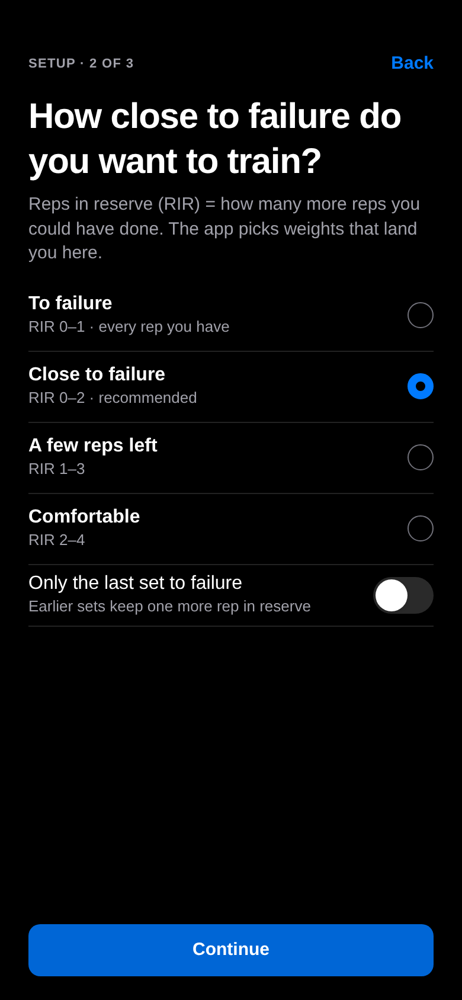
1.5Setup: effort targetHow close to failure to train. The fit zone picks weights that land each set here. "Close to failure" (RIR 0–2) is pre-selected.
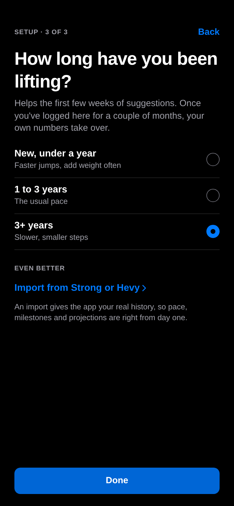
1.6Setup: experienceSets each lift's starting pace until about 8 weeks of your own log take over. An import counts fully.1.4Home, emptyBefore any routines exist. Both buttons work immediately.
2Planning
Routines in folders; a folder with a schedule is a plan. Usually done at home.
2.1RoutinesRoutines grouped in folders. The active folder (what Home shows) is on top; archived folders sit collapsed at the bottom.2.2"+" menuNew routine (into the active folder), new folder, or a blank workout.2.3Routine builderEach exercise with its set rows. LBS "last" reuses last session's weight; REPS is a number, a range or empty. Drag ≡ to reorder; swipe a set to delete it.2.4Keypad, repsThe logging keypad. On reps the bottom-left key is the range dash (6 – 8) and the decimal is off.2.5Exercise pickerIn this routine (untick to remove), Added (in the order ticked), then Popular: You do (your 4 most-logged), then Most popular. A–Z is one tap away. Muscle chips filter, Cardio last.2.6Picker, searchingWhile searching, "In this routine" folds away. Matches you've logged first, then the most popular, then rarely used ones dimmed.2.7Routines, edit modeDrag routines within or between folders, drag folder headers to reorder. Red − deletes a routine; its history is kept.2.8Hold a routineLong-press shortcuts: start, edit, duplicate, move, delete.2.9Folder optionsRename, make active, archive or delete. Deleting a folder never deletes its routines.2.10Move to folderThe tap alternative to dragging. "+ New folder…" creates one and moves the routine in one go.2.11Routine screenOptically aligned back label and Edit. More sits beside Start workout and includes Edit routine. Every set with Previous and what it will start at. A superset shows as one bracket. Start is pinned at the bottom.2.12Superset in the builderLinked exercises sit in a blue bracket, tagged A1 / A2. Drag in or out of the bracket to link or unlink.2.13Superset with…From an exercise's "•••". Up to 3 exercises per group. The same menu later offers "Unlink superset".2.14Routines, with a scheduleEvery scheduled folder shows a code-only week strip. Rest is R, today has a ring, and each routine says when it is due.2.15Plan screenTap a folder's name. Its schedule and base split, followed directly by the workouts.2.16Schedule typeNo schedule (the plain rotation), a repeating cycle or a weekly split.2.17Repeating cycleDays in order, each a routine or Rest. Pick which day today is and what happens on a miss: wait, or stick to dates.2.18Weekly splitSeven rows in week order. A missed workout is skipped or moves to the next rest day.2.19Assign a dayThe same sheet for cycle days and weekdays: a routine, Rest, or a new routine made on the spot.2.20Plan calendarFour weeks of planned vs done, with small dates above larger routine codes (R for rest) and shared SVG checkmarks. Blue = done, orange outline = missed, ring = today. Tap a day from today on to change it.2.21Change one dayOne-off changes that leave the schedule alone: another routine, rest, move, swap, or back to plan.
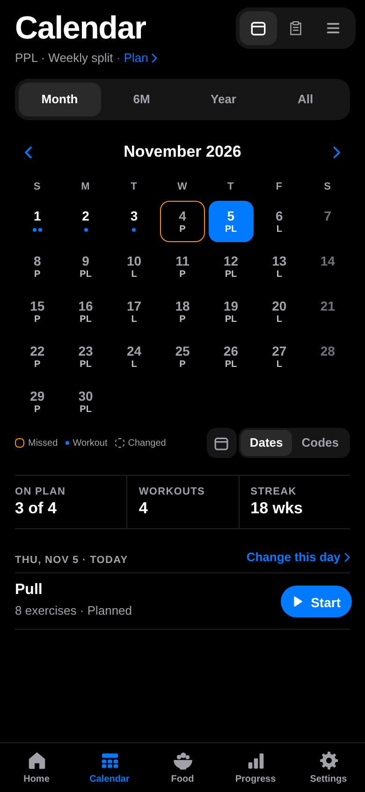
2.23Calendar, datesBrighter planned codes beneath dates on uncompleted days, without planned borders or completed fills, with tightly spaced dots per logged workout and orange missed outlines. Tap a day for its completed sessions or planned routine.
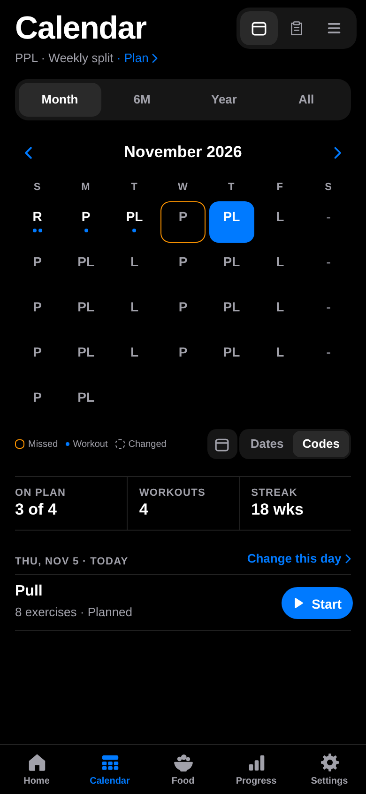
2.24Calendar, codesPlanned routine codes replace dates; rest days retain their dates and dots count logged workouts.
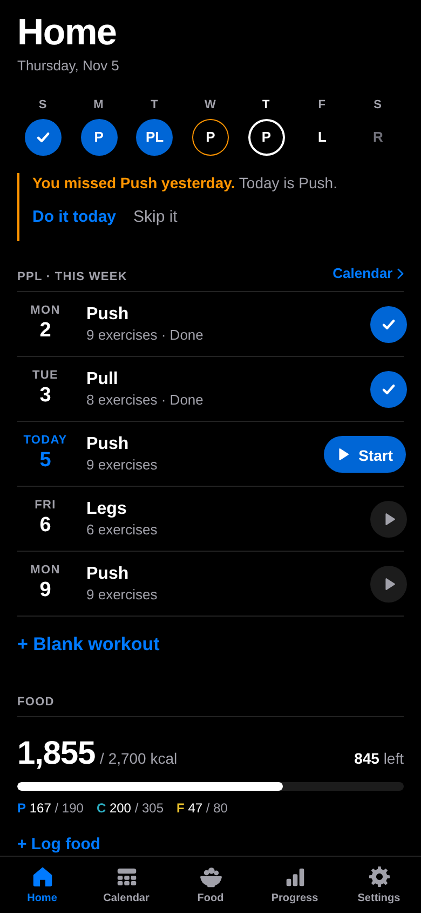
PH3.1Home, scheduledUnfilled week-strip days with borderless rest days and a blue today outline, shared SVG completion checks, gray weekday-only week-strip labels, white routine-row date numbers except blue today, a blue Today label, a compact Start pill with its label aligned to the play glyph and extra space between them, and Blank workout at the bottom of the list.
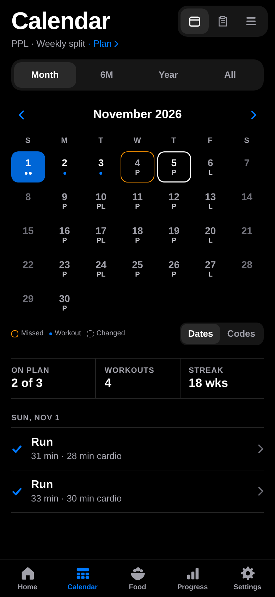
PH3.2Calendar, datesTabs run Calendar, Routines, History. Compact rows align all date numbers above brighter planned codes or workout dots. Planned days have no borders, completed days have no fill, and dots sit close beneath dates; orange outlines mark missed days; today has a white outline when unselected. One dot per logged workout.
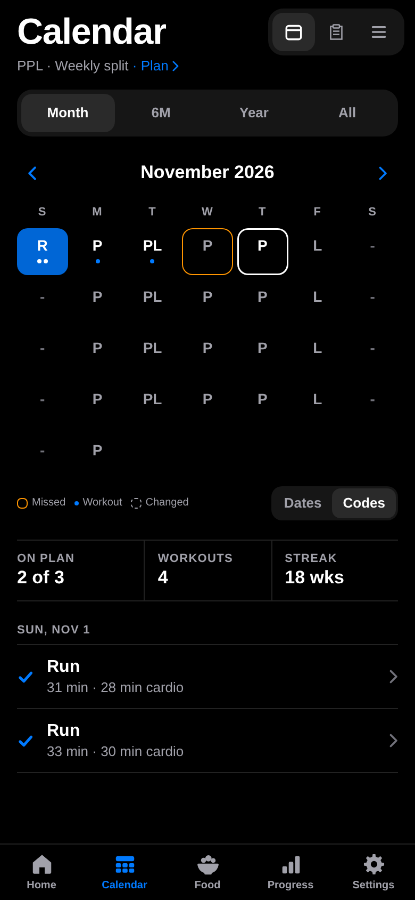
PH3.3Calendar, codesCodes always mean the planned routine; rest days retain dates. Today keeps its white outline when unselected.
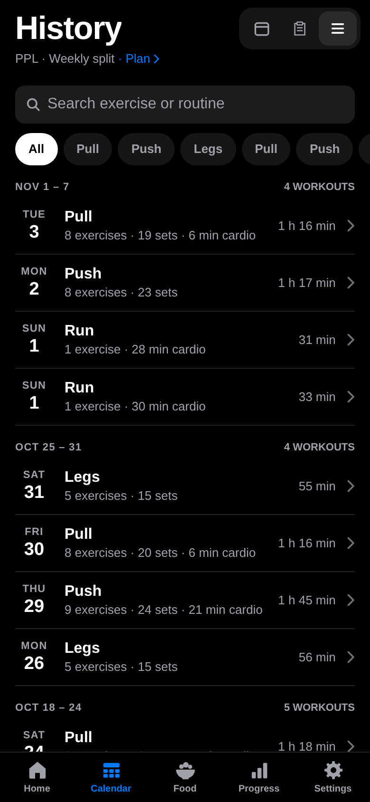
PH3.4HistoryThe third view tab: search completed workouts within the merged Calendar tab.
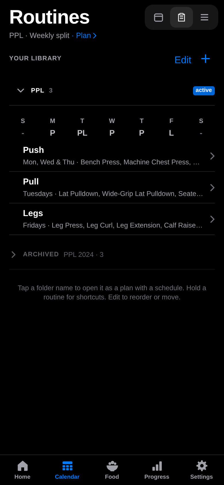
PH3.5RoutinesThe second view tab: reusable templates, code-only schedule strips, and library actions.PH3.6Calendar, todayToday's planned workout uses the same compact blue Start pill as Home, including its play glyph, spacing, and label alignment.
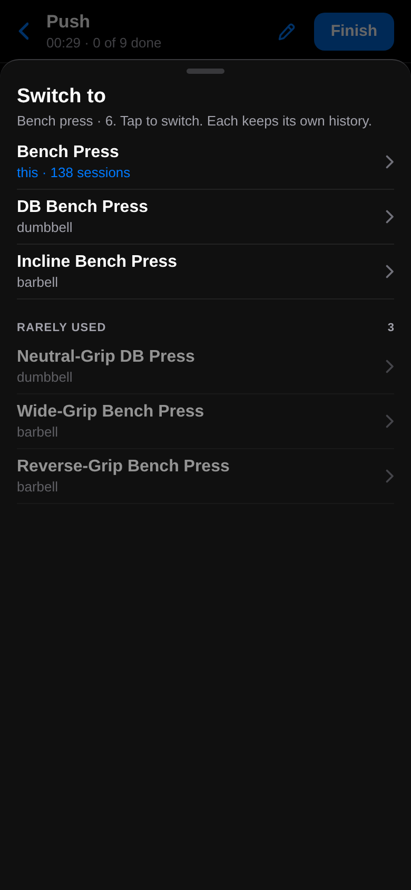
4.36Switch variationFrom +N on the variation chips: every variation, most popular first, yours in blue, rarely used ones dimmed at the end. Tap to switch.
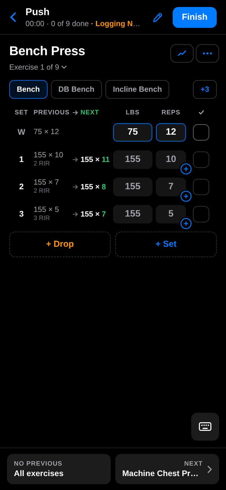
4.35Logging a missed workoutThe header shows the chosen past date while the active timer runs normally.
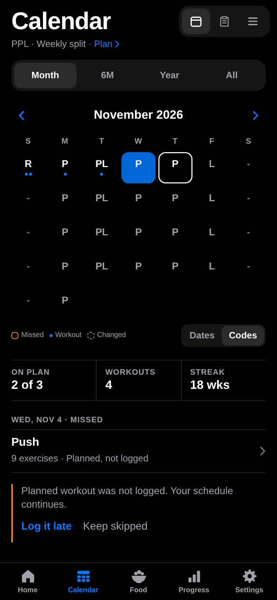
PH3.7Missed dayLog a missed routine late, or keep it skipped.
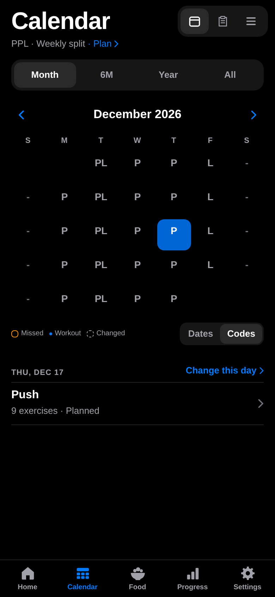
PH3.8Future dayView a planned routine or change one day; no retrospective stats.
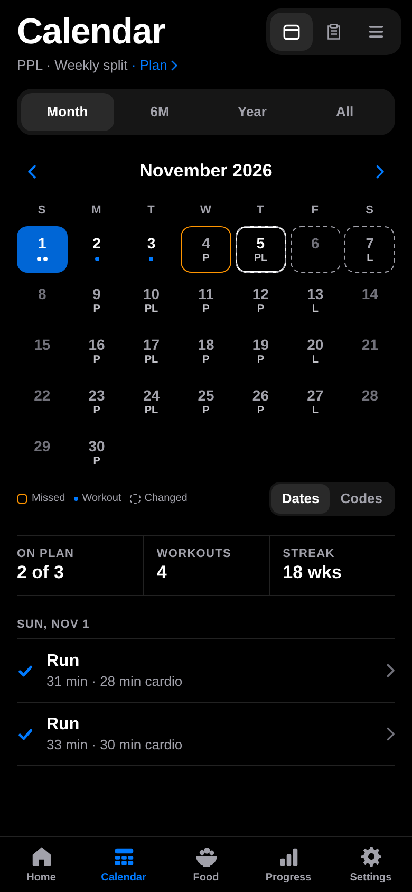
PH3.10Calendar, changed daysGray dashed outlines mark one-off routine and rest changes, matching the routine editor, in Dates and Codes; selected days hide the dashed outline.
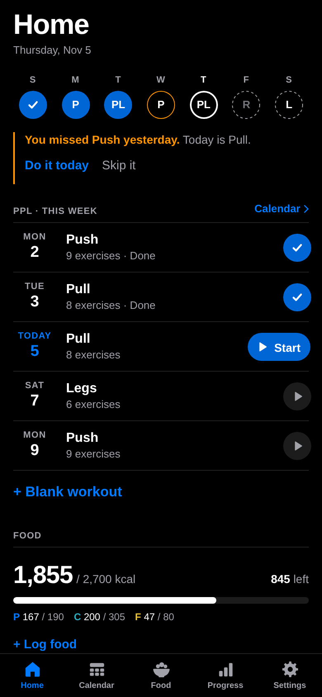
PH3.11Home, changed daysChanged week-strip days use the same gray dashed outline as both calendars; today retains its blue outline.
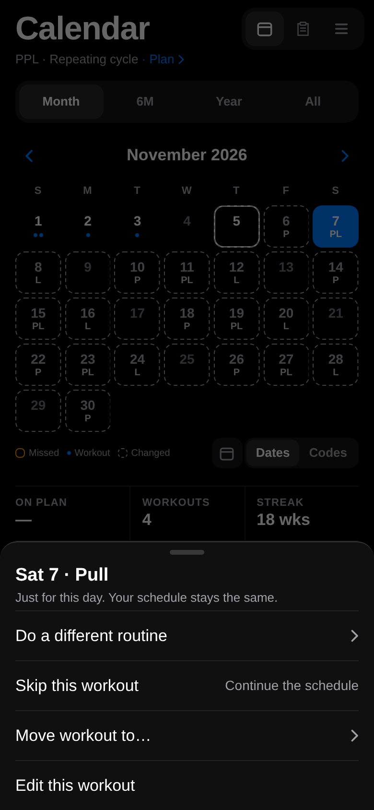
PH3.15Calendar, tap selected dayFirst tap focuses a day; tapping the selected editable day again opens its changes drawer. The visible Change this day action remains available.
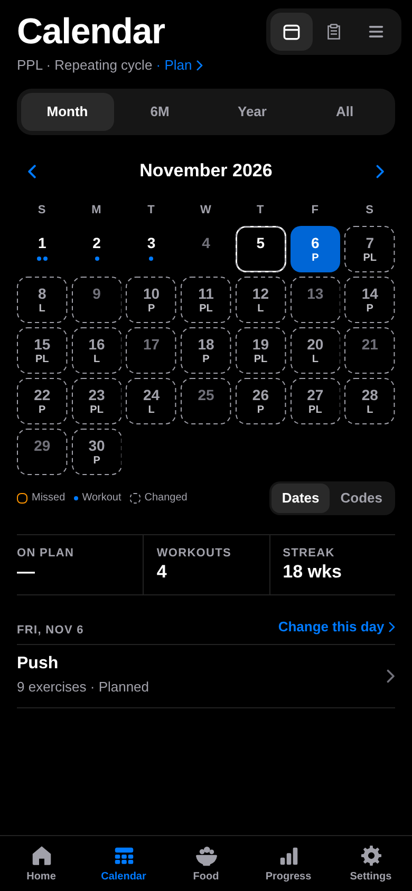
PH3.14Calendar, live changeMoving a workout updates changed-day outlines without rebuilding or navigating away from the calendar.
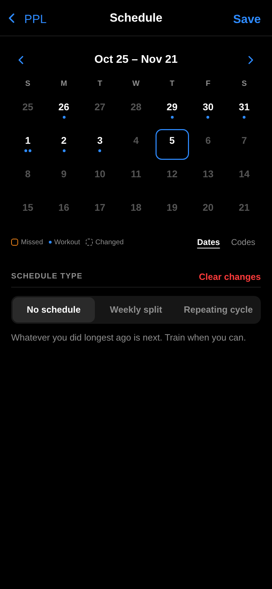
PH3.13Clear draft changesClear changes immediately resets draft overrides without a dialog; only Save persists the result.
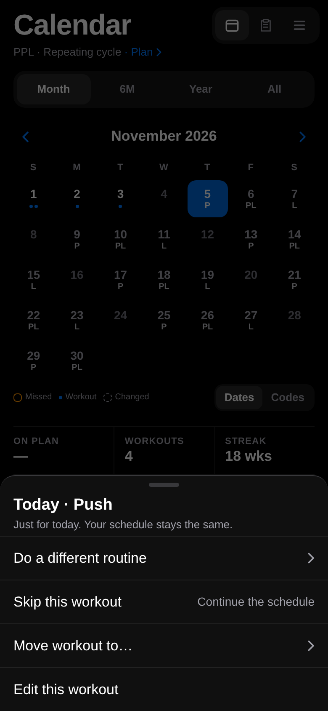
PH3.12Change a cycle workoutSeparate skip and move actions; moving inserts rest days and pushes the cycle back. SVG chevron, neutral Edit this workout, no footer description.
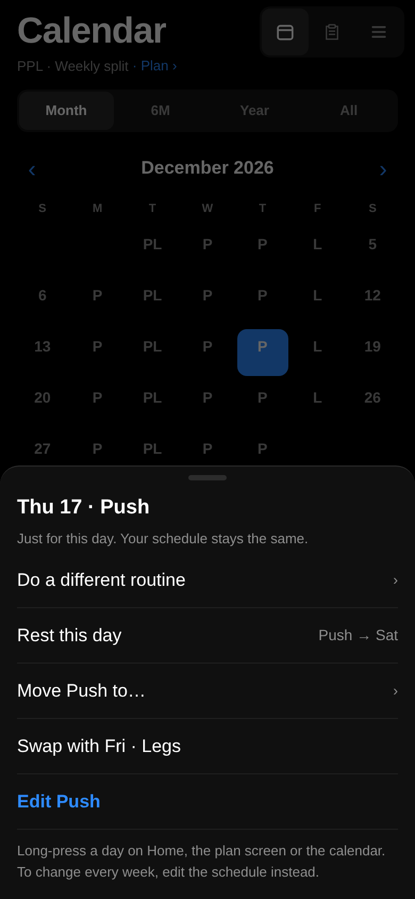
PH3.9Change this dayDifferent routine, rest, move, swap, and edit routine.2.22Effort targetWith effort on, a working set's reps box gets an rpe tab for an optional target, shown as an outlined badge on the rep range. It prefills as a placeholder badge only, never as a logged value.
3Starting
Opening the app at the gym.
3.1HomeThis week as a strip (blue = trained, ring = today); with a scheduled plan, the plan's week instead (3.4). Then the active folder, longest-ago first: ▶ starts a routine, tapping the name opens it. Once Food is set up, today's calories and macros sit under the routines with + Log food.3.2Home, workout runningAn unfinished workout leads Home: timer, where you were, Resume.3.3Resume barOn every other tab while a workout runs, one tap back to your sets.3.4Home, scheduledWith a scheduled active folder, Home follows the plan: a blue Today label and compact Start pill, upcoming workouts without rest rows, and Blank workout at the bottom.3.5Missed a dayA quiet note the day after a missed workout: do it today or skip it. Never shown for "Wait for me" cycles.
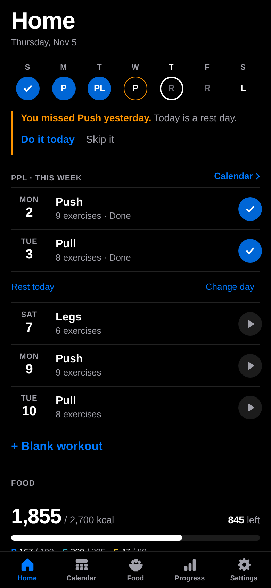
3.7Home, rest todayRest today always has its own row, even beside a missed-workout note; future rest rows are omitted.
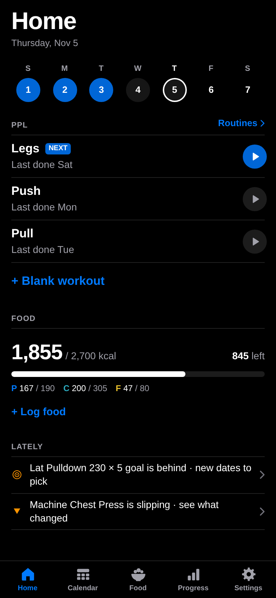
3.6Home: LatelyShared SVG check for completed goals. At most one goal line and one trend line, only when something changed, each shown on one day. Priority: goal done, goal behind, a focus lift turning Climbing or Slipping. Milestones never show here.
4During a workout
Logging sets. No tab bar; Prev / Next move between exercises.
4.1LoggingPrevious = last time's set at the same position; D = you dropped after it. Variation chips appear when variations are linked: this one, yours, then the most popular, up to 4, with +N pinned at the end (4.36). On the first exercise the left button becomes All exercises. The grey keyboard button floating bottom-right opens the keypad on the next open set.4.2Keypad123 | Plates on the left, lbs | reps and one blue ✓ on the right: it moves to the next box, and on the last box completes the set. No text cursor; the blue outline marks the box. ± steps by the weight step.4.3Drop sets"+ Drop" adds a row under the last completed set, prefilled 25% lighter (Settings).4.4SwipesSwipe right → warm-up (moves to the top as W). Swipe left → delete with 5 s Undo.4.5Set menuTap the set number or hold the row: warm-up, move to top, duplicate, delete.4.6Exercise "•••"Switch or link a variation, replace, superset, look back, open the exercise, or remove it from today.4.7BodyweightThe weight column follows the exercise type: BW, + added, or − assisted.4.8Look-back: ChartsThe chart button beside "•••". A two-thirds-height sheet that opens on the Progress chart, shrunk: est. 1RM or top set.4.9Look-back: RecordsBest weight for 1–12 reps; today's rep count highlighted, blue = last 30 days.4.10Look-back: HistoryEvery past session of this lift, newest first, drops in orange.4.11Last exerciseNo next exercise, so the right button becomes All exercises. Ticked segments add the Σ row.4.12All exercisesReplaces everything under the header; Finish stays. Progress rings, supersets as one bracket, tap to jump.4.13All exercises, edit− and ▲▼. Removing one with logged sets asks first. Finish asks whether to save changes to the routine.4.14Add mid-workoutThe builder's picker; the first section is "In this workout".4.15Keypad, last boxOn the last box of a set the same ✓ completes the set and jumps to the next one.4.16Plate padTap a plate to add it to each side; tap one on the bar to take it off. Same height as the number keypad.4.17Plate pad, fullWhen the stack doesn't fit it slides left so the outer plates stay in view. Ten plates a side at most.4.18Bar pickerFrom "Bar 45 ▾". Remembered per exercise; "No bar" is for plate-loaded machines.4.19SupersetThe group shares one screen inside the bracket. The exercise you're on is highlighted.4.20Superset, after ✓Ticking A1 jumps to the same set of A2. A finished partner folds into one line.4.21Cardio: treadmillTIME plus up to two columns, no Previous. Empty boxes show last time in grey and ✓ accepts them. Σ only with 2+ segments.4.22Cardio keypadField tabs follow the columns. In time the bottom-left key types ":" and ± steps a minute.4.23Cardio: bikeColumns change per machine: Bike tracks level. One segment, so no Σ row.4.24Cardio: rowerSplit /500m is worked out from time and meters, never typed.4.25Effort pad: RPEWith effort on, a working set's tabs read lbs · reps · rpe on either box. The effort pad takes the number keys' place, same height and layout: each digit is a value with its word (≤5 Easy to 0 = 10 Max), "." is a ½ toggle that stays on for the next pick, ± a whole step, ⌫ clears. With "Ask on every set", ✓ on reps comes here before ✓ Done. The outlined badge is the routine's target.
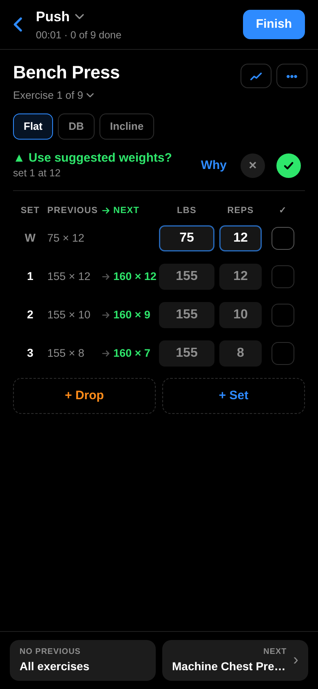
4.27Suggestion barSuggest mode. Previous shows last time → today's target: a new weight is green going up, orange coming down; at the same weight the text is plain and only the reps go green when they rise; arrows lined up; tap the header to show Previous alone. Last time's drop keeps its orange D badge after the set. The bar only asks: ✓ fills LBS with the targets; reps are never touched. Set 1 leads; later sets share its weight when it still fits and are never heavier.
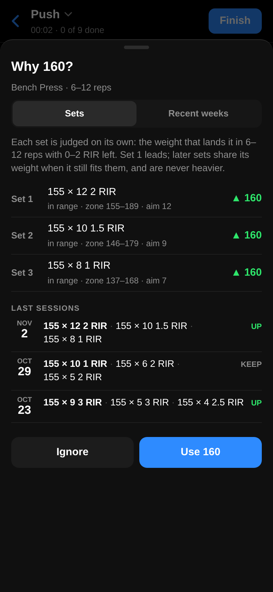
4.28Why: setsEach set's zone (the weights that land it in the rep range at the effort target), its aim, and the last 3 sessions' calls.
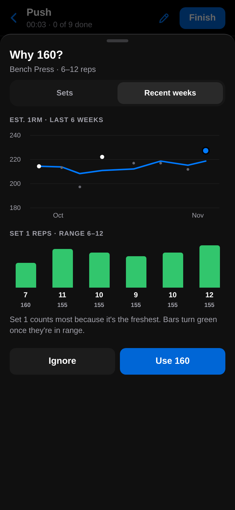
4.29Why: recent weeksEst. 1RM for 6 weeks and set 1's reps against the range.
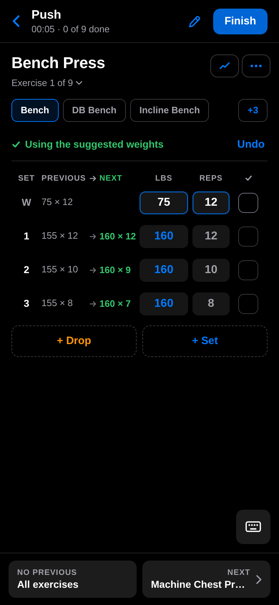
4.30Suggestion acceptedThe LBS boxes now hold the suggested weights, in blue until you change one (type over it or use ±). Undo puts the old values back.
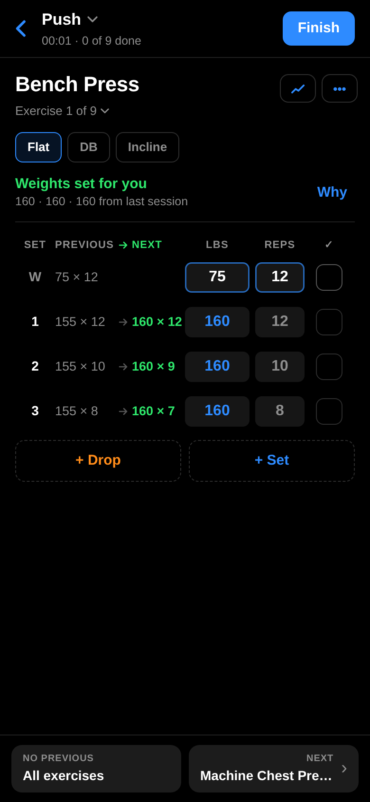
4.31AutoAuto fills LBS when the exercise comes up, in blue until you change one. Ignore puts last time's weights back.
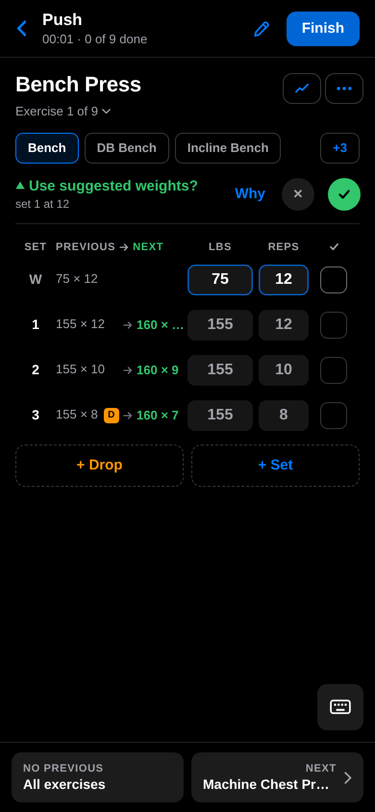
4.34Previous → Next, tightLast time had a drop after set 3. The D badge stays after that set even when the column is tight; the target truncates instead. Tap PREVIOUS → NEXT to show Previous alone.
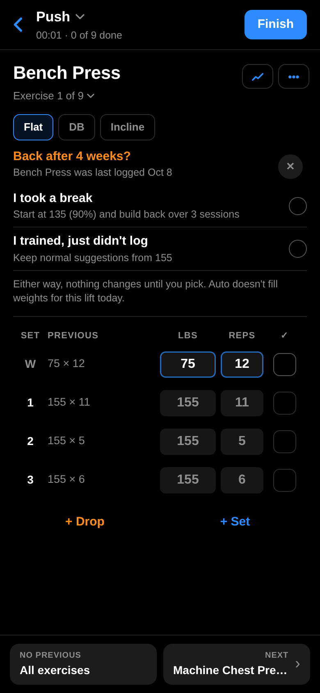
4.32Back after a break?After 3+ weeks without a lift: a break, or sessions that weren't logged? Nothing changes until you pick. Off for now (Settings.askAboutGaps).
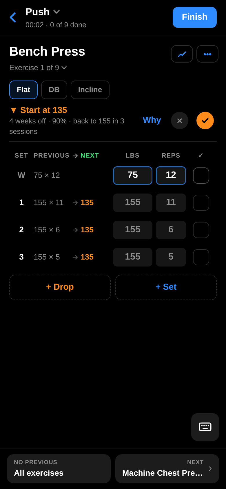
4.33Comeback ramp"I took a break": about 90% of last time (80% after 6 weeks), then back to the old weight over 3 sessions. Those sessions stay out of the trend.4.26Effort pad: RIRThe same pad in RIR: 0 Failure to 5+ Easy, with 6–9 off so a quick thumb can't log an RIR of 6 or more. ± work from empty (starting at 0); + is off on 5+ and − on 0 Failure. ½ greys out on 5+ but still toggles, for the next pick. Badges carry an R (2R): black in a grey ring until the set is done, then faded blue in a blue ring; the one being picked has a blue ring and glow. Stored once as RPE, so switching modes never loses data.
5Finishing
Saving the workout.
5.1Unticked setsOnly when some sets with values weren't ticked. Empty sets are dropped silently.5.2Update the routine?Only when exercises, order or set counts changed. Weights and reps never count.5.3SummaryEach lift's best set vs the last time you did this routine. Cardio gets its own section and a weekly total.5.4Workout optionsThe pencil left of Finish: pause, rename, change start time, discard (confirms first).
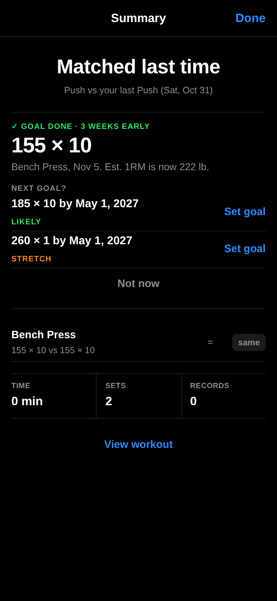
5.5Goal reachedShown once, on the summary of the workout that hit a goal, with a Likely and a Stretch next step. "Not now" leaves the lift without a goal.
6History
Looking back. The calendar / list choice is remembered.
6.1Calendar, monthWeeks follow Settings. The selected date shows its workouts or plan below the monthly stats.6.26 monthsAppears once history spans 6 months. Tap a month to open it.6.3YearAppears after a year of history. ‹ › between years.6.4All timeOne row per year, a bar per month.6.5ListWeeks, search and routine filters.6.6Workout detailOptically aligned History, back chevron, and Edit with a wider back-label gap. Every set, drops included; cardio as a mini table. Repeat, Edit, or Delete in "•••".6.7Edit past workoutLower RIR badges with gray rings, black fill, and an outer background ring; blue editing state. Borderless header with the date close beneath the workout title; tight spacing before the first exercise, balanced spacing around Add Segment, and extra space below Drop/Set to match the next header inset. Fix typos and the date. Records and charts update on Save.6.8History, emptyCompleted sessions appear here once a workout is finished. Calendar and Routines remain one tap away.
7Progress
Am I getting stronger?
7.1ProgressFocus lifts first, then every other lift logged in the last 8 weeks (Train everything). Each gets a status from the last 8 weeks against its own pace, so one bad day never counts.7.2Lift: est. 1RMEpley from the best working set per session (no warm-ups, drops, or sets over 12 reps). White dots = new all-time highs.7.3Lift: top setThe weight actually lifted, reps on each point.7.4Lift: recordsBest weight at each rep count, with dates. Blue = last 30 days.7.5Focus liftsUp to 5 lifts that go first and get the Home lines; by default the 4 most-logged compound lifts, nudged toward common lifts and one per variation group. Train everything off: only these get statuses, milestones and goals.7.6Progress, emptyUntil an exercise has two sessions.7.7CardioHow much, not how fast: minutes, miles or sessions per week. Ranges hide without enough history.7.8Machine detailThe weekly chart for one machine, then recent sessions.7.9Distance recordsFastest mile, 5K, 10K, half and full marathon from run-type exercises.7.10Effort-adjusted 1RMWith "Use effort in est. 1RM", 155 × 10 @8 counts as 12 reps to failure. "Same weight, easier" appears when a weight × reps you did in the last 8 weeks now rates lower.
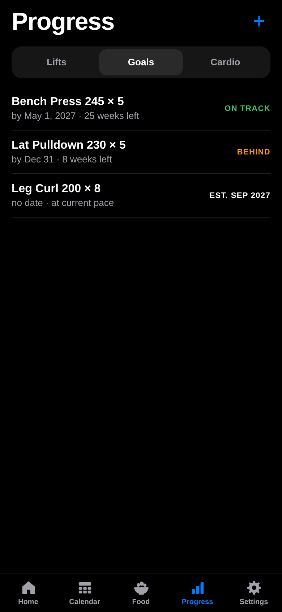
7.12GoalsEach goal with its state. Without a date it shows an estimate, or "not moving toward it yet" rather than a date that keeps sliding.
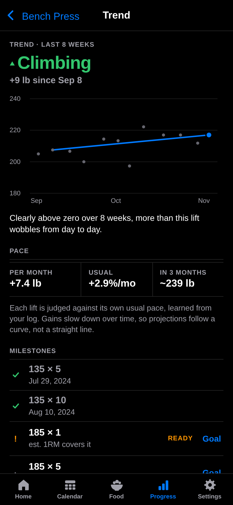
7.13Lift trendFrom the trend row on a lift. The status, the 8-week line, pace, milestones (the round numbers lifters count in; Goal makes one a goal, and one that already is links to it) and its goal.
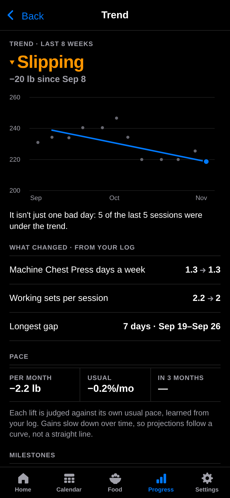
7.14SlippingA real drop with most recent sessions under the trend. "What changed" lists facts from the log only: how often, how many sets, gaps.
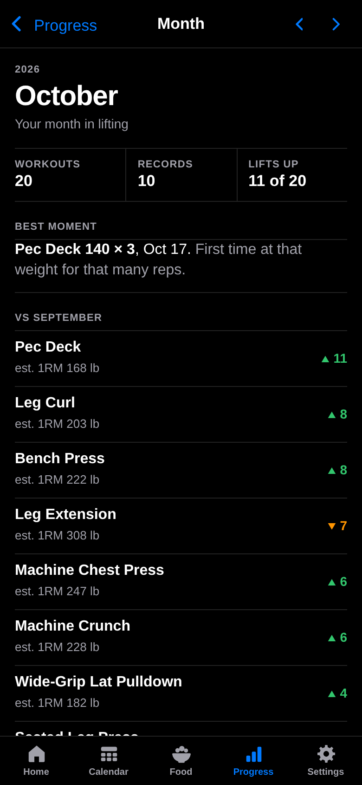
7.15Month in reviewLeads Progress for the first week of each month, then under Month in review. Counts, one best moment, every lift against the month before.
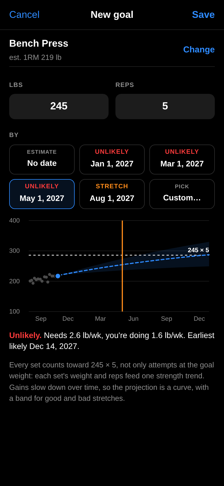
7.16New goalWeight × reps; every set counts toward it, and the chart's goal line is labelled with the goal itself. Each date shows its verdict; the projection is a curve with a slow–fast band, and redraws as you pick.
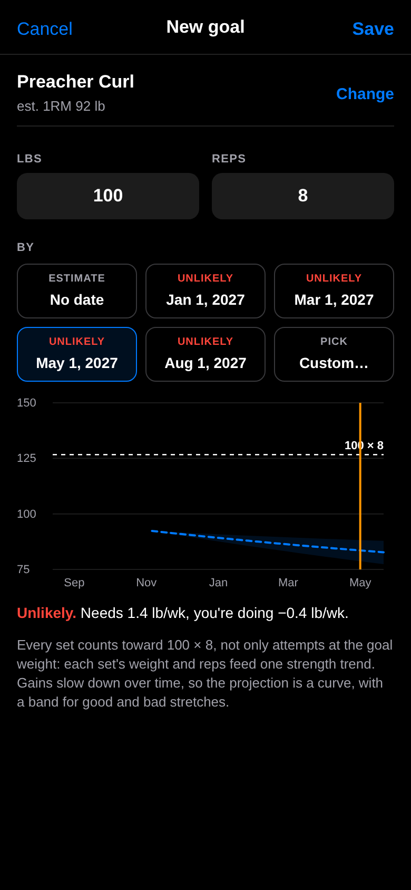
7.17New goal, messy dataWhen recent sessions don't line up there's no projection. You pick a pace instead, read against this lift's own: slow, typical, focused or rare.
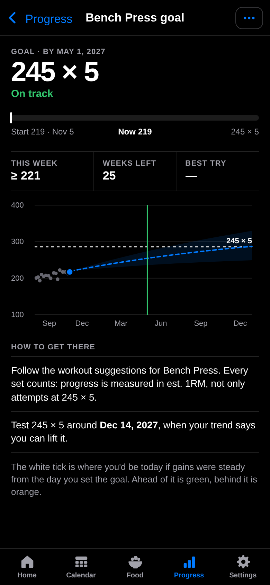
7.18GoalThe white tick is where steady gains would put you today. "This week" is a small number to beat; the plan points back to the workout suggestions.
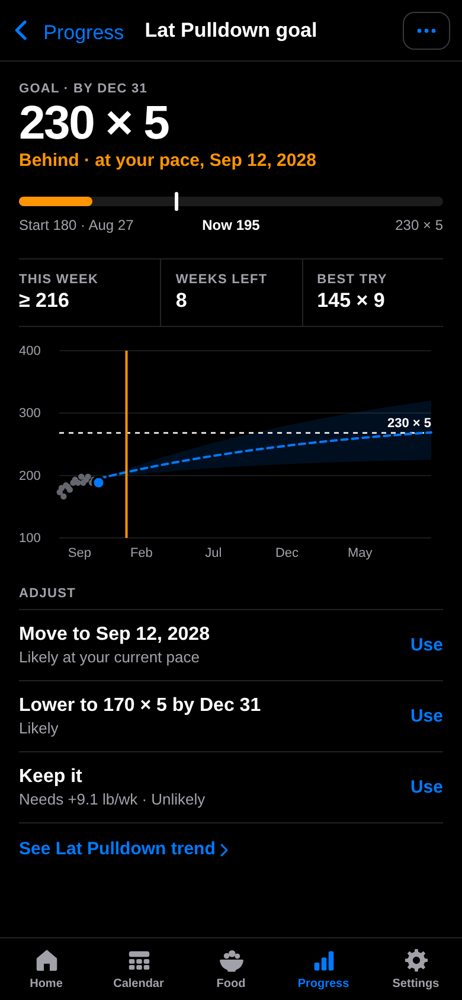
7.19Goal behindAfter 2 weeks behind and no longer Likely: a later date, a lighter target, or keep it. Plain, never scolding.7.11History with effortEach set is one unbreakable block (155 × 10 @8). A line that runs out of room wraps the whole block and never ends on a dot.
8Exercises
The library, from Settings.
8.1LibraryPopular by default: You do (your 4 most-logged), then the most popular. Rarely used ones are hidden until you search. A–Z is one tap away and remembered.
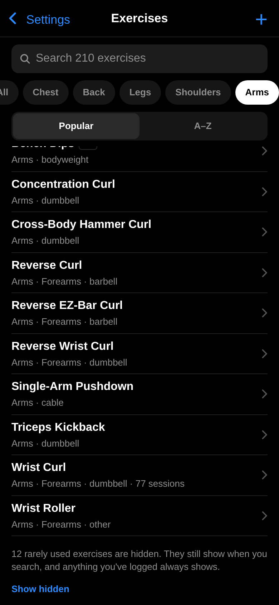
8.7Library, ArmsForearm exercises are Arms tagged Forearms. The footer counts what's hidden and offers Show hidden.8.2Exercise screenStats, linked variations (this, yours, then the most popular; the rest behind All N), where it's used. Merge fixes duplicates.
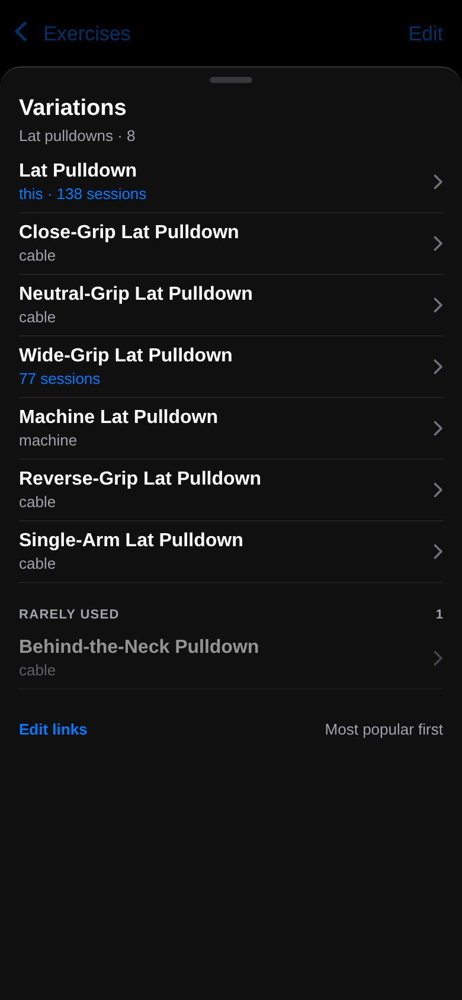
8.8All variationsEvery variation in the group, most popular first, yours with sessions in blue, rarely used ones dimmed under Rarely used.8.3New / edit exerciseName, type (sets the logging columns), muscle, equipment.8.4Link variationsLinked exercises become the variation chips in 4.1 and the switch in Progress.8.5Cardio setupTime plus up to two columns, in order; the preview shows the row.8.6Cardio in the pickerA Cardio filter in the normal picker, each preset with its columns.
9Settings & data
Preferences, backups, import.
9.1SettingsRows open a picker. The Data header shows when you last backed up; no nagging.9.2Setting pickerOne pattern for units, theme, steps, bar weight, drop amount and 1RM formula.9.3Backed upBack up now makes one JSON file and opens the share sheet; the date updates.9.4RestoreAfter picking a backup: both workout counts, and a chance to back up first.9.5Import from Strong / HevyTheir CSV export, matched to the library. Unsure matches are flagged orange.9.6Delete all dataThe only irreversible action, so it needs typing DELETE.9.7EffortOff by default. RPE or RIR, which sets Next on reps asks on, and whether est. 1RM counts reps in reserve. Warm-ups, drops and cardio never ask.
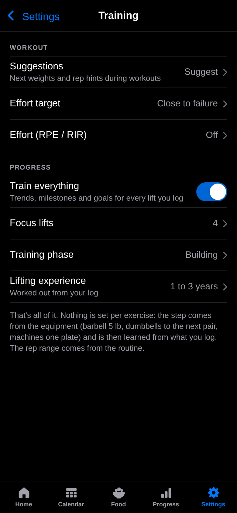
9.9TrainingEvery training option on one screen. Step size, matching and pace are worked out from the log, never asked.
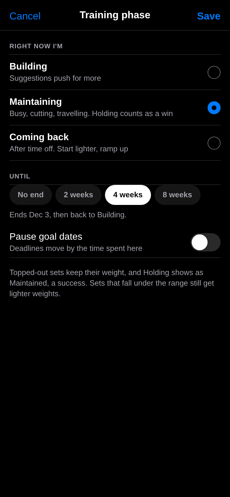
9.10Training phaseMaintaining makes holding count as a win and keeps topped-out sets at their weight; Coming back ramps every lift. Ends on a date and falls back to Building.
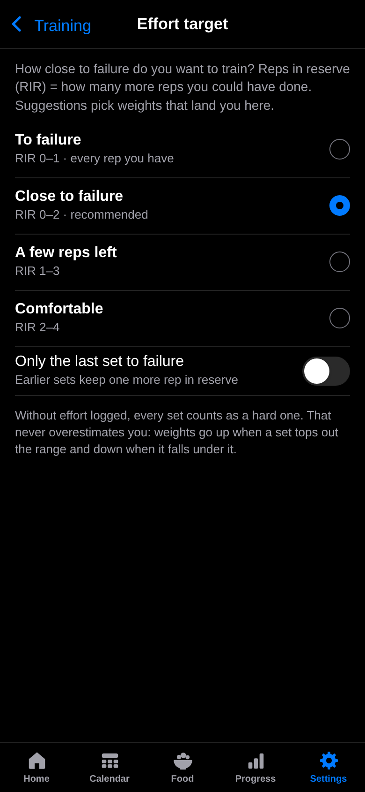
9.11Effort targetThe setup question, editable later. "Only the last set to failure" gives earlier sets one more rep in reserve.9.8RPE and RIROpened from Settings › Effort, and the first time effort is turned on. Both terms, then one table mapping RPE, RIR and how a set feels.
10Food
Calories, macros and micronutrients against your own targets (SPEC §14). Built from design/proposals/nutrition.html; the sample log is a 190 lb lifter on 2,700 kcal.
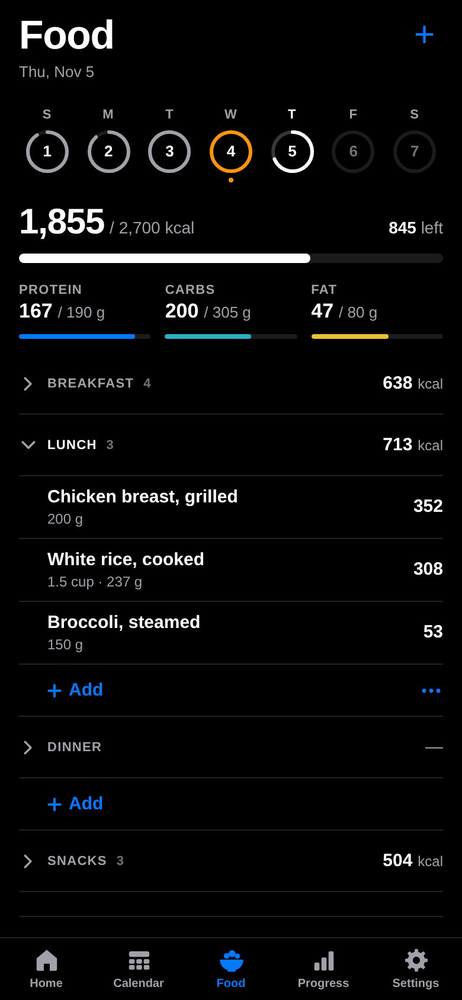
10.1Day, lunchtimeLunch opens itself between 11:00 and 4:00 pm. Rings in the strip fill toward the day's calories; orange with a dot means more than 3% over.
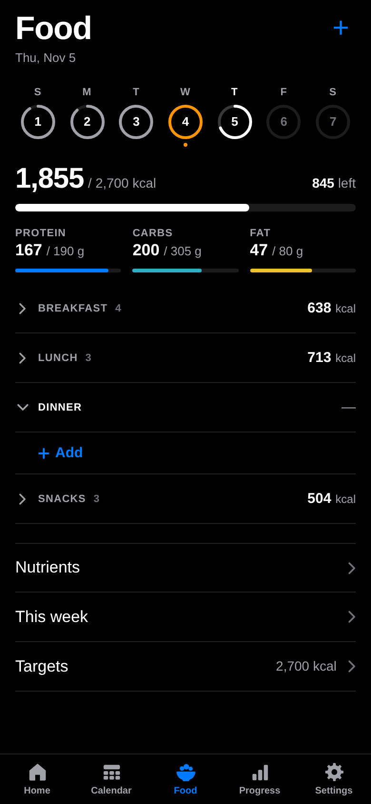
10.2Day, eveningDinner is the meal now: open and empty, so just its Add row. The other meals read as four summary rows.
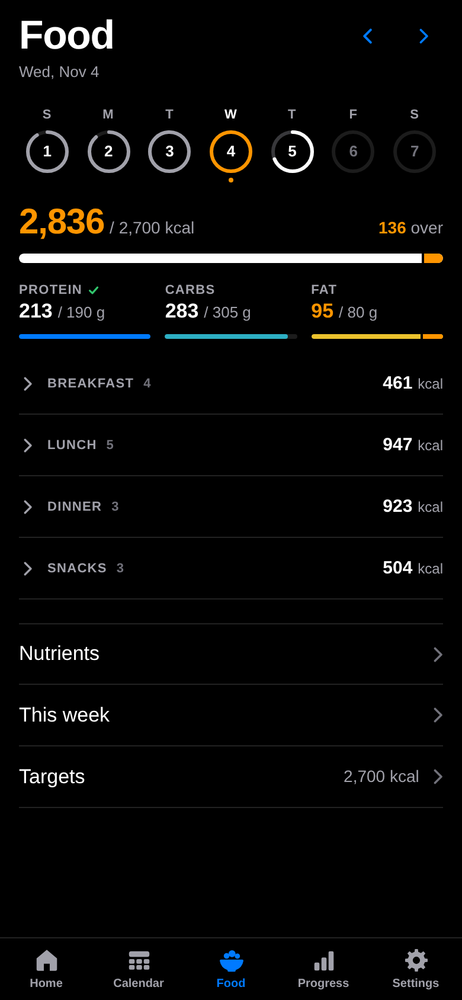
10.3Past day, over targetEvery folder closed. Over by more than 3%: the number and "over" turn orange and the bar gets a canvas notch at the target. Protein is a floor, so it gets a check instead.
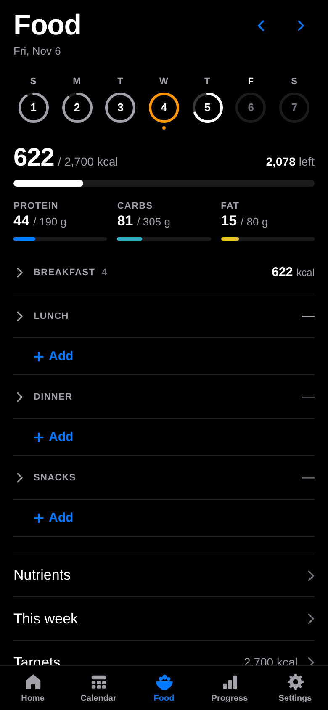
10.4Future dayLogged ahead. The strip ring stays grey and the day counts in the week only once it arrives.
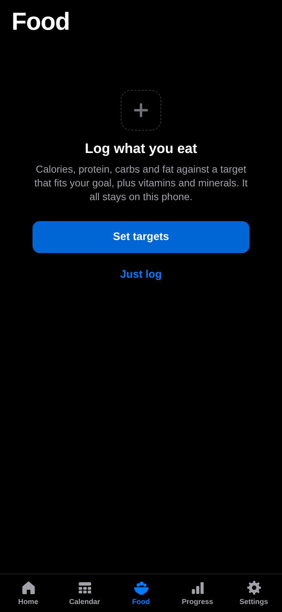
10.5Before setupThe first time Food opens: Set targets, or Just log for totals without a target.
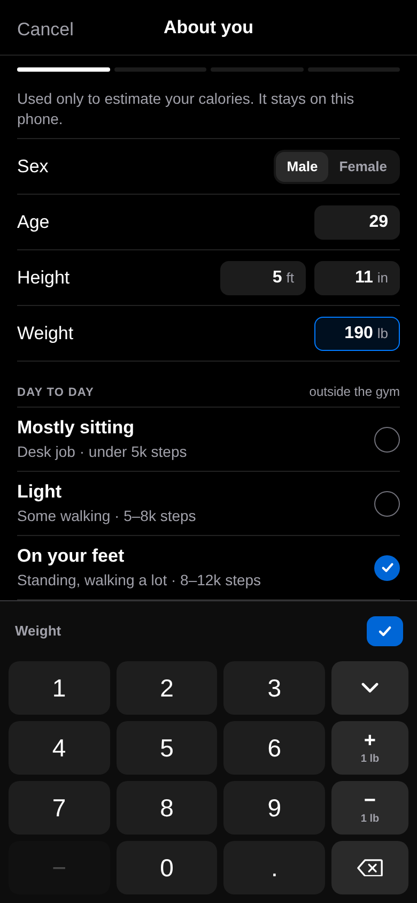
10.6Setup: about youSex, age, height and weight are typed on the keypad dock; the box being typed in gets the blue border. Activity is the day outside the gym, in steps.10.7Setup: goalLose fat, maintain, build muscle, or just log. A goal weight is optional and only dates the pace.10.8Setup: pacekcal a day for each rate and when you'd reach the goal weight. 0.5 lb a week is suggested for losing; the fastest says strength may drop. A pace under your safe minimum is disabled with the reason.10.9Setup: resultMaintenance from Mifflin–St Jeor × activity, the pace, and the target rounded to 50. The ring shows the split; Change picks another diet.10.10TargetsCalories (type a number, or Recalculate), the L ring, grams per macro, then the diets. Lifter: protein 1 g per lb, fat 27%, rest carbs.10.11Targets: another dietPicking a diet applies from today; past days keep the target they had. The active diet moves to the top.10.12Targets: custom+ adds 2% to a macro and takes 1% from each of the others; no macro goes under 5%.10.14Add foodThe meal is the title (tap to switch). Search with the barcode, four shortcuts, then Usually at dinner (3+ times in 30 days) and Recent. + logs your last amount at once and turns into a check; the check takes it back off.10.15SearchingYour foods and foods you log first, then the built-in USDA database (about 13,000 foods, offline), short names first. Open Food Facts results follow under Online when there are fewer than 8.10.16AmountTapping a row opens the amount with the keypad up: g · serv · oz, ± 10 g / ¼ / 0.5 oz, and ½. The ring follows every key; ✓ Log logs it and goes back with the row checked.10.17A logged foodTap a food on the day page: the same screen with Save, Star and •••. Change the amount or move it to another meal. Every nutrient shows % of your own target; missing values are —.10.18Meal sheetThe four meals. Fixed: they can't be renamed or reordered.10.19New foodA nutrition label as rows: name, brand, the serving, then calories and macros per serving as the label prints them. More nutrients holds the rest. Stored per 100 g; a quiet note shows when calories are far from 4·P + 4·C + 9·F.10.20Quick addCalories plus optional protein, carbs and fat, logged straight into the meal. It never joins your foods.10.21Saved mealBuilt like the routine builder: the name, the ring, the foods with a delete disc, amount and drag handle, and Add food.10.22Add food: Meals+ logs a whole saved meal into this meal, one entry per food, and turns into a check that takes it back off. Copy a day sits underneath.10.23Copy a dayThe last two weeks of logged days. + copies a whole day into the same meals, with one Undo.10.24Meal optionsThe ••• on an open meal (and long-press on its row): Save as meal, Copy to today, Clear meal.10.25Day nutrientsEvery tracked nutrient for the day against your target: amount / target, a 4 px bar and the %. Macros in their colors; the rest neutral, orange only past a limit or upper limit, with "over". A floor reached gets a check.10.26A nutrient's top foodsWhere the day's sodium came from: the foods that gave the most, with their share.10.27Missing dataA food with no value for a nutrient adds nothing, and is listed under Missing from. Totals are never guessed.10.28Fill in missing nutrientsA packaged food lacking most vitamins and minerals borrows them from the closest built-in food. Only what's missing is copied; borrowed values show with "~".10.29ScanThe camera fills the screen under a white top bar: Cancel, the meal, and the light when the phone has one. Two matching reads in a row look the code up. Type the number is always there; with no camera it's the whole screen.10.30Scan resultYour own food for a barcode wins, then Open Food Facts. Nothing is logged until Log; the amount box opens the full amount screen. Wrong food? opens New food filled in from the scan, with the barcode.10.31Settings: FoodTargets, and where foods come from. Look up foods online turns Open Food Facts search and barcode lookups on or off; the built-in USDA foods always work offline.10.32WeekAverage per day, days on target (90–103%) and days protein was hit, counting only past days with food. Stacked macro bars against the dashed target, an orange dot over days that went over; averages against target; then the seven days. Tap a bar or a day to open it.10.13Nutrient targetsEvery micronutrient from the US Dietary Reference Intakes for your sex and age. Limits say so; type your own number and Reset brings the DRI back.